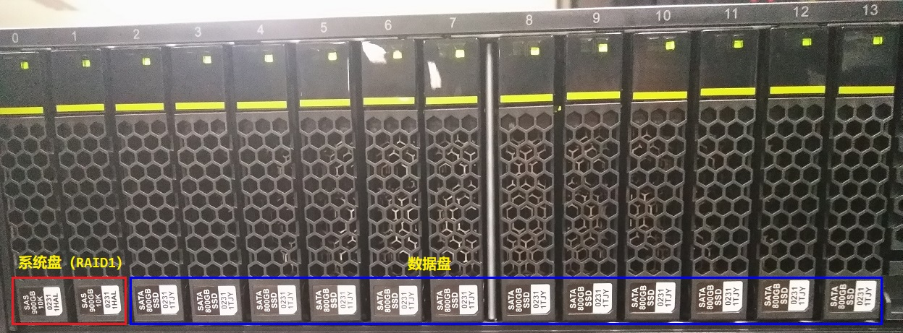
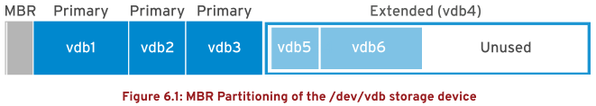
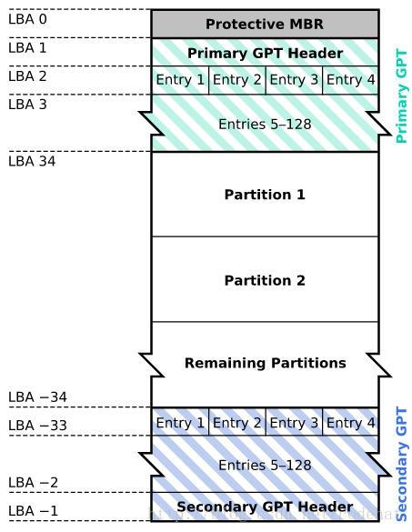
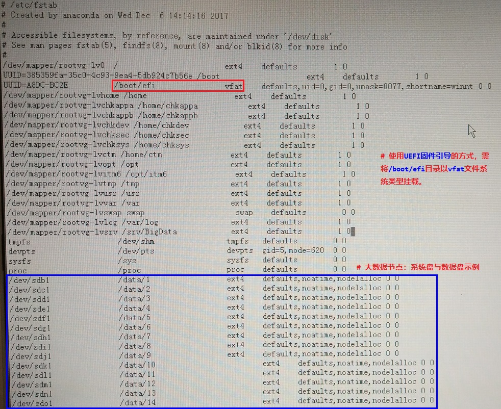

第六章 管理基本存储
目标：
- 使用命令行创建和管理存储设备、分区、文件系统和交换空间。
章节：
- 添加分区、文件系统和持久挂载
- 管理交换空间
第一节：添加分区、文件系统和持久挂载
目标：
- 完成本节后，学生应该能创建存储分区，将其格式化为相应的文件系统，然后进行挂载以供使用。
对磁盘进行分区：
- 磁盘分区将硬盘驱动器划分为多个逻辑存储单元，这些单元称为分区（partitions）。
- 系统管理员可以使用不同的分区执行不同功能。
* 注意：物理服务器磁盘阵列分布示例

MBR分区方案：MBR partitioning scheme
- 诞生自1982年的MBR（master boot record，主引导记录）分区方案在BIOS固件（firmware）
的系统上最多支持4个主分区（primary partition），通过扩展分区（extended partiton）
和逻辑分区（logical partition），最多创建 15 个分区。
- 由于分区大小数据以32位值存储，使用MBR分区方案时，最大磁盘和分区大小为 2TiB（单个分区
最大 2TiB）。

- 由于物理磁盘变得越来越大，而基于SAN的卷甚至更大，因此针对MBR分区方案的2TiB磁盘和
分区大小限制已不再是理论限制，而是系统管理员在生产环境中越来越频繁遇到的实际问题。
- 因此，新的GPT（GUID partition table，GUID分区表）分区方案正在取代传统的MBR方案
用于磁盘分区。
GPT分区方案：
- 对于运行统一可扩展固件接口（unified extensible firmware interface，UEFI）固件的
系统，GPT是在物理硬盘上布置分区表的标准。
- GPT是UEFI标准的一部分，可以解决原有基于MBR的方案所带来的许多限制。
- GPT最多可提供128个分区。
- MBR使用32位来存储逻辑块地址和大小信息，而GPT为逻辑块地址分配64位。
- 这使得GPT可支持最多 8ZiB，即 80 亿太字节的分区和磁盘。
- 除解决MBR分区方案的限制以外，GPT还可提供一些其他功能特性和优势。
- GPT使用全局唯一标识符（GUID）来识别每个磁盘和分区。
- MBR存在单点故障，GPT提供分区表信息的冗余。
- 主GPT位于磁盘头部，而备份副本（次要GPT）位于磁盘尾部。
- GPT使用校验和来检测GPT头和分区表中的错误与损坏。
* 注意：
1. 逻辑块地址：logical block address，LBA
2. GPT分区方案中的LBA相当于MBR分区方案中的扇区
3. 为兼容传统的MBR分区方案，GPT分区方案中使用受保护的MBR（protective MBR）。


* 注意：
1. 系统使用BIOS固件（Legacy模式）引导时，引导的系统盘只能使用MBR分区方式，
数据存储的数据盘可使用MBR与GPT分区方式。
2. 系统使用UEFI固件（UEFI模式）引导时，引导的系统盘默认使用GPT分区方式，数据
存储的数据盘可使用MBR与GPT分区方式。
使用parted管理分区：
- parted工具可以管理 MBR 和 GPT 分区方案。
- parted命令显示磁盘分区表，如下所示：

- 默认情况下，parted单位是 10 进制（KB、MB、GB），可使用 unit 子命令更改。
1. s 表示扇区
2. B 表示字节
3. MiB、GiB、TiB（2进制）
4. MB、GB、TB（10进制）
- $ parted /dev/sdX unit s print：查看以扇区为单位的磁盘分区

向新磁盘写入分区表：
- 对新磁盘进行分区，首先必须为其写入磁盘标签。
- 磁盘标签指示了所用的分区方案：MBR（msdos）、GTP（gpt）。
- 创建新磁盘的磁盘标签：
$ parted /dev/sdX mklabel msdos
$ parted /dev/sdX mklabel gpt

* 注意：
1. parted命令更改立即生效。
2. 如果误用了parted，注定会导致数据丢失。
3. mklabel 子命令可擦除现有的分区表。
4. 仅当想重复使用磁盘而不考虑现有数据时，才应使用mklabel。
5. 如果新标签更改了分区边界，则现有文件系统中的所有数据都将无法访问。
创建MBR分区：
- 指定需要创建分区的磁盘设备

- 使用 mkpart 子命令创建新的主分区或扩展分区
- 指定分区的文件系统类型，如xfs或ext4，这并不会在分区上创建文件系统，仅仅指示分区类型。

- 指定新分区开始的扇区，s 后缀提供了扇区的值。
- 也可以使用 MiB、GiB、TiB、MB、GB 或 TB 后缀
- 如果未提供后缀，则默认为 MB。
- 指定应结束新分区的磁盘扇区

* 注意：
1. 当parted启动时，它将检索设备的磁盘拓扑。
2. 如，磁盘的物理块大小通常是一个由parted收集的参数。
3. 利用这些信息，parted可确保所提供的起始位置能让分区与磁盘结构正确对齐。
4. 正确的分区对齐对于获得最佳性能至关重要。
5. 如果起始位置导致分区错位，parted会显示警告。
6. 对于大多数磁盘而言，起始扇区为 2048 的倍数较为安全。
- 通过parted并不能直接提供分区的大小，但可以使用以下公式进行快速计算：

- 退出parted

- $ udevadm settle
# 等待系统检测新分区并在/dev目录下创建关联的设备文件
- $ parted /dev/sdX mkpart primary xfs 2048s 1000MB
# parted命令行模式替代交互模式创建磁盘分区

创建GPT分区：
- 指定需要创建分区的磁盘设备
- 使用mkpart子命令开始创建新分区
- 指示要在分区上创建的文件系统类型，如xfs或ext4。
- 指定磁盘上新分区开始的扇区
- 指定应结束新分区的磁盘扇区
- 退出parted
- 运行udevadm settle命令，等待系统检测新分区并在/dev目录下创建关联的设备文件。

- $ parted /dev/sdX mkpart <partition_name> <fs> <start> <end>
# parted命令行模式替代交互模式创建磁盘分区

删除分区：
- 指定包含要删除的分区的磁盘
- 确定要删除的分区的分区编号
- 删除分区
- 退出parted

- $ parted /dev/sdX rm <partition_number>：命令行方式删除分区
创建文件系统：filesystem
- 分区完成后，需要向其中添加文件系统（格式化过程）。
- RHEL支持许多文件系统，其中两种常见的类型是 XFS 和 ext4。
- RHEL安装程序 Anaconda 默认使用 XFS。
- 以root用户身份，使用 mkfs.xfs 命令为块设备应用XFS文件系统。
- 对于ext4文件系统，使用 mkfs.ext4 命令。


* 注意：
1. 由于RAID磁盘阵列卡故障而无法进行文件系统创建！

2. 每种文件系统需与块设备的容量大小相匹配，若块设备容量大于文件系统所能支持的容量，
创建文件系统将报错！

挂载文件系统：
- 添加完文件系统后，最后一步是将文件系统挂载到目录结构中的目录上。
- 将文件系统挂载到目录层次结构上后，用户空间实用程序可以访问设备上的文件或在设备上
写入文件。
手动挂载文件系统：
- 如下所示：

持久挂载文件系统：
- 手动挂载可用于验证，但是当系统重启，挂载将丢失。
- 为确保系统在启动时自动挂载文件系统，需要编辑/etc/fstab文件。
* 示例：大数据平台节点/etc/fstab文件

- 在/etc/fstab文件中添加或删除条目后，需要运行 systemctl daemon-reload 命令或
重启服务器，让systemd注册新配置。
- 第一个字段：
1. 指定设备
2. 示例使用 UUID 来指定设备
3. 创建时，文件系统会在其超级块中创建和存储UUID。
4. 或可以使用设备文件，如/dev/vdb1。
* 注意：
1. 使用UUID更为可取，因为块设备标识符在特定情况下可能会变化。
2. 如当云提供商更改虚拟机的基础存储层或在每次系统启动会以不同顺序检测磁盘时。
3. 块设备文件名可能会发生改变，但UUID在文件系统的超级块中会保持不变。

- 第二个字段：
1. 目录挂载点，通过它可以访问目录结构中的块设备。
2. 挂载点必须存在，如果不存在，使用mkdir命令创建。
- 第三个字段：
文件系统类型，如xfs或ext4。
- 第四个字段：
1. 以逗号分隔的、应用于设备的选项列表。
2. defaults是一组常用选项。
$ man 8 mount：查看挂载常用选项

- 第五个字段：
1. 备份设备
2. 其他备份应用通常不使用此字段，设置为 0。
- 最后一个字段：
1. fsck顺序字段决定了在系统启动时是否应运行fsck命令，以验证文件系统是否干净。
2. 该字段中的值表示fsck的运行顺序。
3. XFS文件系统不使用 fsck 来检查自己的文件系统状态，将该字段设为 0。
4. ext4文件系统，若为根文件系统，将该字段设为 1。
5. 若是其他ext4文件系统，则将该字段设为 2。
6. 这样，fsck就会先处理根文件系统，然后同步检查不同磁盘上的文件系统，并按顺序
检查同一磁盘上的文件系统。
* 补充要点：
1. 磁盘分区工具：parted、fdisk、gdisk
2. 使用以上3种磁盘分区工具时，需注意各自使用的容量单位差异！


3. 修复superblock损坏的ext4文件系统


练习 P166：ADDING PARTITIONS, FILE SYSTEMS, AND PERSISTENT MOUNTS
第二节：管理交换空间
目标：
- 完成本节后，学生应该能够创建和管理交换空间以补充物理内存。
交换空间概念简介：swap space
- 交换空间（swap space）是受Linux内核内存管理子系统控制的磁盘区域。
- 内核使用交换空间，通过保存不活动的内存页（inactive pages）来补充系统RAM。
- 系统RAM与交换空间组合在一起称为虚拟内存（virtual memory）。
- 当系统上的内存使用量超过定义的限制时，内核将搜索RAM，寻找已分配给进程但空闲的内存页。
- 内核将空闲的内存页写入到交换区，并向其他进程重新分配RAM页面。
- 如果某个程序需要访问磁盘上的页面，则内核会找到另一个空闲的内存页，将其写入到磁盘，
然后从交换区重新调用所需的页面。
- 由于交换区位于磁盘上，所以与RAM相⽐，交换会比较慢。
- 虽然是用于增加系统RAM，但对于RAM不足以满足工作负载需求的问题，不应将交换空间视为
可持续性的解决方案。
调整交换空间的大小：
- 如下所示：

创建SWAP分区：
- 使用parted可以创建所需大小的分区并将其文件系统类型设置为 linux-swap。
- $ parted /dev/sdX mkpart <partition_name> linux-swap <start> <end>
# 命令行方式创建SWAP分区
- $ udevamd settle
# 等待系统检测新分区并在/dev目录下创建关联的设备文件

格式化SWAP分区：
- mkswap 命令格式化SWAP分区，mkswap在分区开头写入单个数据块，而将分区的其余部分保留
为未格式化，这样内核就可以使用它来存储内存页。

激活SWAP分区：
- swapon 命令激活已格式化的SWAP分区。
- $ swapon -a：激活/etc/fstab文件中列出的所有SWAP分区
- $ swapon --show：查看可用的SWAP分区及其优先级
- swapoff 命令停用SWAP分区。
- 如果交换空间具有写入的页面，swapoff会尝试将这些页面移动到其他活动交换空间或将
其写回到内存中。
- 如果无法将数据写入到其他位置，则swapoff命令会失败，并显示错误，而交换空间将仍
保持活动。

永久激活SWAP分区：
- 编辑/etc/fstab文件，如下所示写入相应条目：

- $ systemctl daemon-reload：使systemd服务注册新配置
设置SWAP分区优先级：priority
- 默认情况下，系统会按顺序使用交换空间，即内核先使用第一个已激活交换空间，直至其
空间已满，然后开始使用第二个交换空间。
- 可以为每个交换空间定义优先级，从而强制按该顺序使用交换空间。
- 要设置优先级，可在/etc/fstab中使用 pri 选项。
- 内核会首先使用优先级最高的交换空间。
- 默认优先级为 -2，值越高，优先级越高。
- 如下所示，/etc/fstab中定义的三个交换空间。
- 内核首先使用最后一个条目，其优先级为 pri=10。
- 当该空间已满时，它将使用第二个条目，其优先级为 pri=4。
- 最后，它将使用第一个条⽬，其默认优先级为 -2。

- 当SWAP分区具有相同的优先级时，内核会以轮循方式向其中写入。
练习 P174：MANAGING SWAP SPACE
Lab P178：MANAGING BASIC STORAGE